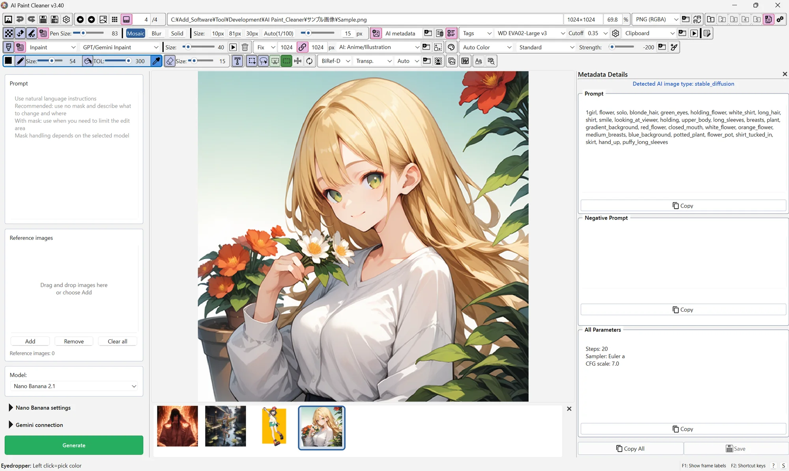

AI Paint Cleaner Manual
Open an image, mark an area, process it, and save. Mosaic, object removal, background removal and tagging — all in one window.
- 1Open an imageTop-left button, Ctrl+O, or drag & drop.
- 2Pick a toolChoose the frame for the job: mosaic, repair/remove, background removal, and so on.
- 3Mark the area and runDrag on the image to mark the area, then press Enter or ▶.
- 4SaveCtrl+S to overwrite, Ctrl+Shift+S to save as a new file.
Screen mapClick a box on the screen to see what that area does.

- File Tools: Open, save and settings.
- Page Operations: Move between images in the folder.
- Image Information: File name, image size and zoom.
- Format Conversion: Convert to PNG / JPG / WebP / PDF, or compress.
- Sorting & Bookmarks: Sort images into folders or open them in other apps.
- Mosaic Tools: Mosaic, blur or solid fill over the traced area.
- Metadata Tools: Check and remove generation metadata.
- Tag / Caption: Generate tags or an English caption from the image.
- Inpainting Tools: Erase, redraw or restore the masked area.
- Resize & Upscale: Resize and AI upscaling.
- Manual Color Adjustment: Adjust brightness and color with sliders.
- AI Correction: AI correction for color, brightness, noise, blur and more.
- Paint Tools: Pen, fill and eyedropper.
- Eraser: Erase the traced area.
- Text: Place text and speech bubbles.
- Selection Tools: Select an area to move, copy, crop or transform.
- Background Removal: Make the background transparent, white, blurred or a set color.
- Image Insert: Insert speech bubbles and other assets.
- Watermark: Add a text or image watermark.
- Organize Files: Rename files and find duplicate / similar images.
- Inpaint settings: Settings for the selected inpaint model.
- Canvas: Image view and drawing area.
- Thumbnail bar: Shows the images in the folder along the bottom.
- Metadata Details: Shows the prompt and parameters of generated images.
- Help: Frame labels and shortcut list.
Browse by feature
Basic controls
Hover over any button to see its tooltip. Press F1 to label every frame and F2 to show the shortcut list.
| Action | Mouse | Keyboard |
|---|---|---|
| Draw / select | Left click | |
| Zoom | Wheel | |
| Pan | Middle-drag | Space＋left-drag |
| Previous / next image | Back / forward buttons | ← / → |
| Switch tool | Right click＋back / forward | ↑ / ↓ |
| Switch inpaint category | Left click＋back / forward | Ctrl＋↑ / ↓ |
| Change tool size | Right click＋wheel | |
| Fit / 100% | Alt＋0 / Ctrl＋0 | |
| Show image grid | Ctrl＋L | |
| Open / save | Drag & drop | Ctrl＋O / Ctrl＋S |
| Undo / redo | Ctrl＋Z / Ctrl＋Y |
Troubleshooting
The first run takes a long time
Background removal, AI correction, tag / caption generation and inpainting download their models the first time you use them. Later runs are faster.
The GPU is not used / an error appears
Update your GPU driver. Only NVIDIA GPUs are supported. You can check the processing device in Settings.
Diff replacement picks the wrong image
Change how the reference is chosen to suit your purpose (Ctrl+R opens the dialog). Learn more →
I want to stop the confirmation when deleting or sorting
Turn on "Skip confirmation when deleting or sorting images" in Settings.
External services (GPT / Gemini / NovelAI) don't work
Each service needs its own API key. Use "API key setup" in the sidebar to get one and register it. Charges depend on each service's plan and usage. Learn more →
I found a bug
Please let us know via BOOTH messages ↗, Payhip messages ↗, email, or the bug report form ↗. Steps to reproduce and a screenshot help us fix it faster.
Use with AutoMosaic
Review and touch up images processed by AutoMosaic. Check the mosaic areas in the preview, and remove unwanted mosaics just by tracing them with a right-click.